Compare Consensus and Reference Graphs or STRINGdb Networks
Source:R/compare_consensus.R
compare_consensus.RdCompares a consensus adjacency matrix to a reference network, either provided manually or generated from STRINGdb. Visualizes True Positives (TP), False Negatives (FN), and optionally False Positives (FP) edges.
Arguments
- consensus_matrix
A binary square adjacency matrix representing the consensus network. Row and column names should correspond to gene symbols.
- reference_matrix
Optional. A binary square adjacency matrix representing the reference (ground truth) network. If
NULL, a STRINGdb high-confidence physical interaction network (human, score > 900) is used.- false_plot
Logical. If
TRUE, an additional plot of False Positives (FP) is generated. Default isFALSE.
Value
A ggplot object visualizing the comparison. If
false_plot = TRUE, a combined plot of True Positives / False
Negatives and False Positives is returned.
Details
If no reference_matrix is provided, the function
automatically queries STRINGdb to generate a high-confidence physical
interaction network.
The plots differentiate:
Confirmed Edges (TP or CE): Present in both consensus and reference.
Missing Edges (FN or ME): Present in reference but absent in consensus.
Extra Edges (FP or EE): Present in consensus but absent in reference (only if
false_plot = TRUE).
Examples
data(count_matrices)
data(adj_truth)
networks <- infer_networks(
count_matrices_list = count_matrices,
method = "GENIE3",
nCores = 1
)
head(networks[[1]])
#> regulatoryGene targetGene weight
#> 1 EEF1G PTPRC 0.1475067
#> 2 EIF3E PCBP1 0.1461004
#> 3 CD3E CD3D 0.1398844
#> 4 PTPRC CYBA 0.1335812
#> 5 EEF1A1 NACA 0.1273391
#> 6 HNRNPA1 PTPRCAP 0.1248806
wadj_list <- generate_adjacency(networks)
swadj_list <- symmetrize(wadj_list, weight_function = "mean")
binary_listj <- cutoff_adjacency(
count_matrices = count_matrices,
weighted_adjm_list = swadj_list,
n = 2,
method = "GENIE3",
quantile_threshold = 0.99,
nCores = 1,
debug = TRUE
)
#> [Method: GENIE3] Matrix 1 → Cutoff = 0.08759
#> [Method: GENIE3] Matrix 2 → Cutoff = 0.08969
#> [Method: GENIE3] Matrix 3 → Cutoff = 0.09596
head(binary_listj[[1]])
#> ACTG1 ARHGDIB BTF3 CD3D CD3E CFL1 COX4I1 COX7C CYBA EEF1A1 EEF1D EEF1G
#> ACTG1 0 0 0 0 0 0 0 0 0 0 0 0
#> ARHGDIB 0 0 0 0 0 0 0 0 0 0 0 0
#> BTF3 0 0 0 0 0 0 0 0 0 0 0 0
#> CD3D 0 0 0 0 1 0 0 0 0 0 0 0
#> CD3E 0 0 0 1 0 0 0 0 0 0 0 0
#> CFL1 0 0 0 0 0 0 0 0 0 0 0 0
#> EEF2 EIF1 EIF3E FTH1 FTL HLA-A HLA-B HLA-C HLA-E HNRNPA1 HNRNPA2B1 MYL6
#> ACTG1 0 0 0 0 0 0 0 0 0 0 0 0
#> ARHGDIB 0 0 0 0 0 0 0 0 0 0 0 0
#> BTF3 0 0 0 0 0 0 0 0 0 0 0 0
#> CD3D 0 0 0 0 0 0 0 0 0 0 0 0
#> CD3E 0 0 0 0 0 0 0 0 0 0 0 0
#> CFL1 0 0 0 0 0 0 0 0 0 0 0 0
#> NACA PCBP1 PCBP2 PFN1 PTPRC PTPRCAP RAC2 SKP1 SNRPD2 TMSB4X UBA52 UBC
#> ACTG1 0 0 0 0 0 0 0 0 0 0 0 0
#> ARHGDIB 0 0 0 0 0 0 1 0 0 0 0 0
#> BTF3 0 0 0 0 0 0 0 0 1 0 0 0
#> CD3D 0 0 0 0 0 0 0 0 1 0 0 0
#> CD3E 0 0 0 0 0 0 0 0 0 0 0 0
#> CFL1 0 0 0 0 0 0 0 0 0 0 0 0
#> UQCRB YBX1
#> ACTG1 0 0
#> ARHGDIB 0 0
#> BTF3 0 0
#> CD3D 0 0
#> CD3E 0 0
#> CFL1 0 0
consensus <- create_consensus(binary_listj, method = "vote")
compare_consensus(
consensus,
false_plot = TRUE
)
#> Initializing STRINGdb...
#> Mapping genes to STRING IDs...
#> Mapped 38 genes to STRING IDs.
#> Retrieving physical interactions from STRING API...
#> Found 31 STRING physical interactions.
#> Adjacency matrices constructed successfully.
 compare_consensus(
consensus,
reference_matrix = adj_truth,
false_plot = TRUE
)

compare_consensus(
consensus,
reference_matrix = adj_truth,
false_plot = TRUE
)
